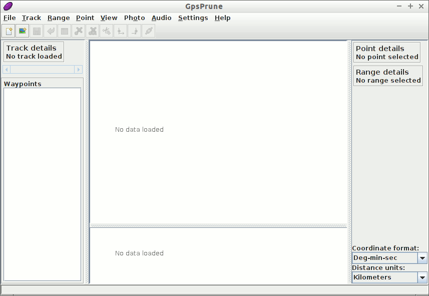
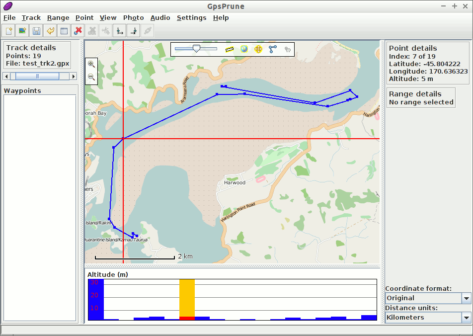
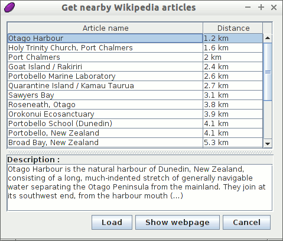
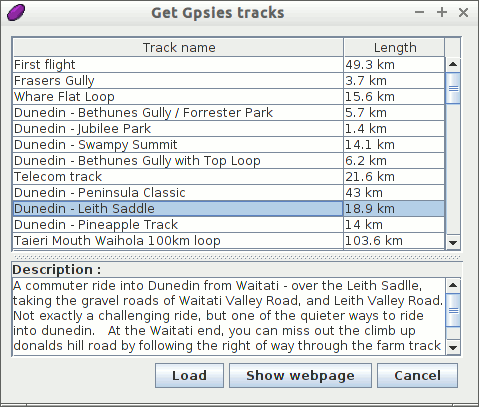
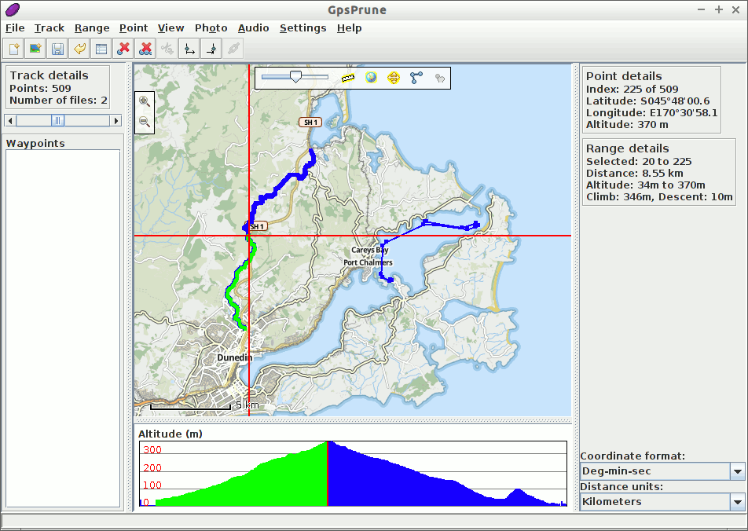

GpsPrune gyorstalpaló¶
A GpsPrune egy java alkalmazás koordináta adatok megjelenítésére és szerkesztésére. Felhasználható az adatok előkészítésére a GPS eszközökhöz és az azok által rögzített adatok elemzésére.
Ebben a gyorstalpalóban betöltünk és megjelenítünk a live lemezen található adatokat és ezek kiegészítésére néhány online információhoz férünk hozzá. Ezért hasznos lesz, ha ennek bemutatásához valamilyen fajta internet kapcsolattal rendelkezik.
Kezdjen neki¶
Válassza ki a „GpsPrune” ikont a Navigation and Maps menüben a GpsPrune futtatásához a live rendszeren. Ez a lentebb bemutatott üres ablakot adja.
{kind=link}
A menü parancs felhasználásával most betöltünk egy fájlt. Ez lehet egy GPX, egy KML vagy egy KMZ fájl, vagy akár egy vesszővel vagy tabulátorral tagolt fájl, ha rendelkezik egy ilyennel. Egy megfelelő, pár nyomvonalat tartalmazó GPX fájl megtalálható a lemezen itt: ~/data/vector/gpx/test_trk2.gpx, így ezt töltjük be.

Mivel ez a fájl két nyomvonalat tartalmaz, kiválaszthatjuk melyiket töltsük be. Válasszuk az elsőt és nyomjunk OK-t.
Most látnia kell a kékkel jelölt nyomvonalat a fehér háttéren. Ha ez a nyomvonal útpontokat is tartalmazna (ami nem áll fent), akkor azok is megjelennének a nevükkel. Lent a fő térkép alatt egy magassági grafikon látható, mely a nyomvonal metszetét mutatja, ha az tartalmaz magasságokat.

Feltételezve, hogy van hálózati kapcsolata, bekapcsolhatja a térképet a földgömb ikonra kattintva a fő térképablak felső részén vagy a menüből .
{kind=link}
Az egérrel húzogathatja a térképet és az egérgörgővel vagy dupla kattintással nagyíthat/kicsinyíthet. Jobb egérgombbal húzva megadhat egy téglalapot melyre nagyítani akar, a jobb gomb menü további lehetőségeket tartalmaz. Egy pontra kattintva megjelennek a részletek, beleértve a magasságot és az időpontot, ha rendelkezésre áll. A magassági metszetre is kattinthat, hogy a megfelelő pontot kiválassza.
A megjelenítés testreszabása¶
Megváltoztathatja a térképet a menüponttal. Vessünk egy pillantást egy alternatív térképforrásra az ötödik „Hikebikemap” kiválasztásával. Ez a hikebikemap.org-ról használja a térképet hegymászáshoz és kerékpározáshoz hasznos további információk megjelenítéséhez mint szintvonalak és kerékpárutak.

Wikipedia¶
Most találjunk ki több információt, arról hol van ez a nyomvonal. Ezt egy pont kiválasztásával tehetjük meg és ezután a menüből . Ez a cikkek listáját adja, melyek koordinátája a legközelebb vannak a kiválasztott ponthoz. Az egyik listaelemre kattintva további információt kapunk a lenti részben.
Ezután a Load gombot használhatja a pont betöltésére a GpsPrune-ba vagy a Show webpage gombot a Wikipedia oldal böngészőbe betöltésére.
Gpsies¶
Végül töltsünk le egy másik nyomvonalat ugyanerről a területről. Az Online –> Get Gpsies tracks menüparancsot használhatjuk a gpsies.com honlapon található nyomvonalak közötti keresésre. Megint a megfelelő elemek listáját kapjuk és egyet kiválaszthatunk a leírás megjelenítéséhez.
Kattintson a Load gombra a nyomvonal betöltéséhez és válasszuk ki a nyomvonal hozzáfűzéséhez a már betöltött adatokhoz. Most mindkét nyomvonalat láthatjuk ugyanabban az ablakban.
Távolságok mérése¶
A túra hosszának kitalálásához kattintsunk a túra kezdőpontjára, Dunedin-től északra és válassza a menüpontot. Majd kattintson a legmagasabb pontra a metszeten és válassza -et a menüből. Most láthatjuk a „Range details” részben, hogy a nyomvonal ezen része 8.55 km hosszú, 346 métert emelkedik és 10 métert esik.
{kind=link}
GpsPrune használata más rendszereken¶
A GpsPrune kipróbálása után a livelemezről lehet, hogy más rendszeren is használni szeretné, egy másik Linux vagy Mac OSX vagy Windows rendszeren. Néhány Linux kiadás tartalmazza a GpsPrune-t a szabványos könyvtárai között (keresse a „Prune”-t vagy „GpsPrune”-t), vagy egyszerűen letöltheti a honlapról a legújabb változatot.
Nem kell telepíteni, de a java runtime telepítését igényli, 1.5 vagy magasabb verziót. Kibővítheti a GpsPrune funkcionalitását más szabad szoftverek telepítésével, mint például Gpsbabel, Gnuplot, Exiftool és Java3d.
Miután telepítette a GpsPrune-t az állandó rendszerén elmentheti a beállításait a menüponttal. A program emlékezni fog ezekre amikor legközelebb futtatja a GpsPrune-t. Vegye figyelembe, hogy a live lemez használatakor az összes, a normál fájlrendszerbe mentett minden fájl elveszik amikor leállítja a számítógépet.
A letöltött térkép csempéket is elmentheti a lemezre a menüpont kiválasztásával és egy könyvtár megadásával, melybe a képeket mentjük. Ez segít a megjelenítés gyorsításában mivel nem kell ismételten letölteni a képeket.
További olvasmányok¶
- GpsPrune honlap: https://gpsprune.activityworkshop.net/
- Képernyőképek: https://gpsprune.activityworkshop.net/screenshots.html
- Segéd és oktatóanyagok: http://gpsprune.activityworkshop.net/how-tos.html